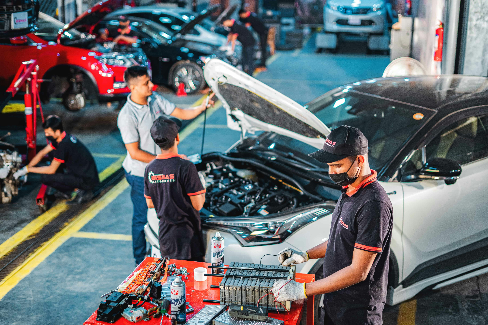

Jak se můžu objednat na servis?
- Vyberte si, zda nám zavoláte, nebo napíšete e-mail.
- Popište své auto a servis, který potřebujete.
- Domluvte si s námi vhodný termín a přivezte vůz do servisu.
Jaké opravy a servisní práce provádíte?
Zajišťujeme běžnou údržbu, výměnu oleje, opravy brzd i diagnostiku vozidla. Provádíme také další servisní práce podle potřeby vašeho auta.
Servisujete i osobní automobily?
Ano, zaměřujeme se na servis a opravy osobních automobilů. Pomůžeme vám s pravidelnou údržbou i s řešením technických závad.
Kdy máte otevřeno?
| Den | Otevírací doba |
|---|---|
| Pondělí–pátek | 8:00–17:00 |
| Sobota | 9:00–12:00 |
| Neděle | Zavřeno |